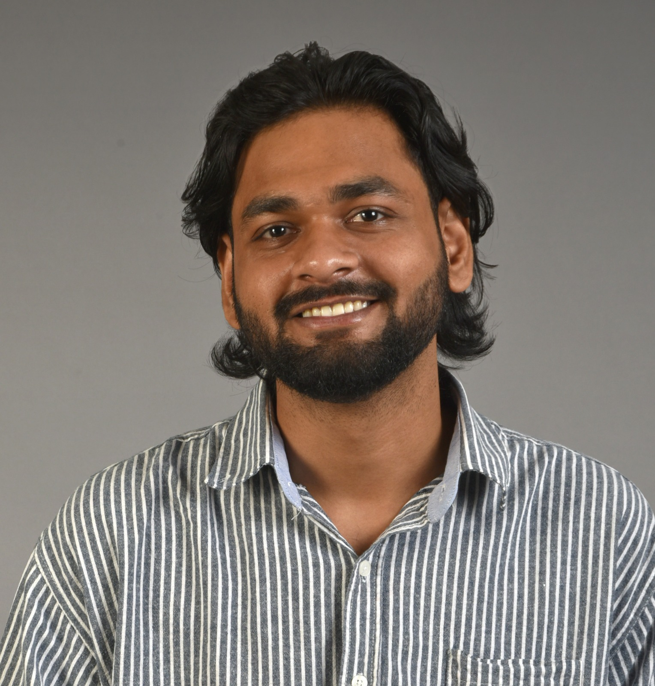

/ About — 2026
Designer of quiet things.
I'm a Visual Communication Designer studying at NIFT Delhi, working at the intersection of digital interfaces, brand systems, and editorial form. I care about typography, hierarchy, and the small moments that make a product feel considered.

Profile
Bachelor of Design (Fashion Communication) student at NIFT Delhi, currently in the 6th semester. My work focuses primarily on UI/UX and graphic design, supported by branding, motion graphics, and video editing.
I've collaborated on visuals for the World Craft Council (APR 2024), edited educational reels for Strategy with Shikhar, and led visual communication as Graphic Head at the NIFT Sports Club. I'm continuously exploring how design improves user experience across digital platforms.
Experience
Education
Core Disciplines
Toolkit
Currently
Open to internships and freelance collaborations in UI/UX, branding, and editorial work. Based in New Delhi — happy to work remote.